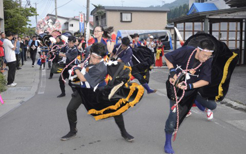
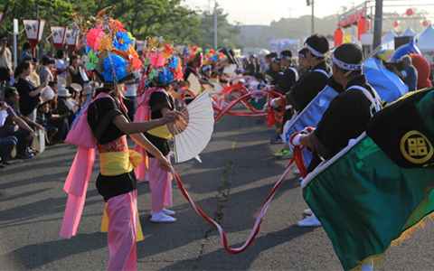
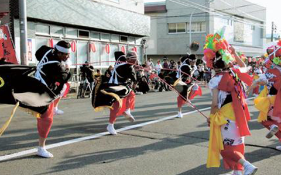

荒馬
今別荒馬
今別のネブタ祭りに2頭の荒馬が各戸口で踊り、その後に花笠、赤ジュバンの踊り子は ネブタばやしおもしろく、踊りながら続いて町をねり歩く。 この踊りは田植えが終り、田の神が天に昇るとき、農民が神に加護と感謝のため催される、 神送り、サナブリの行事である。一体、津軽地方のサナブリはボーの神とよばれる 男女二体の藁人形を先頭に、太刀振り、傘鉾、サラ、荒馬の順序で、笛、 太鼓のはやしに送られて村中を練り歩き、のち鎮守の森の木に藁人形をかけて帰るのである。 近年」これが簡略され、太刀振りと荒馬になりつつある。
大川平荒馬
大川平荒馬踊りは、昔のサナブリの行事つまり田植えが終り、田の神が天に昇るとき、 農民が神に加護と感謝のために催される神送りの行事として伝わってきたものです。 大川平荒馬保存会が伝える荒馬の由来は古く、 天正13年頃大浦為信が津軽を統一して 藩の経済を保つため、馬と農耕と結びつけ 農作物の増収を図ったことが起因であろうとされています。 それまで未開の山野だった土地を汗とほこりにまみれながら、 数少ない馬を頼りとして馬とともに切り拓いてきた農民達にとって馬は宝であり、 そうして大事にされ苦労をともにしてきた馬の働きと、勇壮な馬の姿を 現し踊り継がれてきたのが現在の「荒馬」であると言われています。
二股荒馬
二股の荒馬は、大川平荒馬同様夏の夜を彩るネブタとしてともに 古くは江戸時代より伝承され、今日まで引き継がれている。 一般的に大川平荒馬と同じとされ、大川平地区からの分家となった頃からと伝えられている。 二股の荒馬は、田植えが終り、稲や野菜、家畜に虫がつかない様に祈る「虫送り」の行事の ときに田や畑、地区内で踊られたと伝えられている。